Історія гурту
-
Ранні роки (1993 - 1999)
Формування Papa Roach почалося в січні 1993 року, коли Джейкобі Шеддікс (вокал) і Дейв Бакнер (ударні) зустрілися на футбольному полі Вакавілльскої середньої школи, де завели розмову про музику. Незабаром до них приєдналися Вілл Джеймс (бас-гітара) і Бен Лютер (тромбон). Вони вирішили взяти участь в шкільному конкурсі талантів, де виконали пісню Джимі Гендрікса «Fire», але не перемогли. У 1993 Лютер був замінений на Джеррі Гортона (гітара) з сусідньої Венденської школи. Гортона з гуртом познайомила його подруга, яка вже була їх фанаткою. У той час Papa Roach мали щоденні репетиції і влаштовували виступи. Їх перший туровий автобус називався Moby Dick, на честь якого Шеддікс взяв собі псевдонім Coby Dick. Гурт був названий на честь прийомного діда Шеддікса, Говарда Вільяма Роуча, якого близькі звали «Папа Роуч» («Papa Roach»). Роуч вчинив самогубство в 2006, коли у нього був діагностований рак у термінальній стадії. Гурт вшанував його пам'ять альбомом «The Paramour Sessions».
У 1994 році Papa Roach записав дебютний міні-альбом, «Potatoes for Christmas». Дейва Бакнер тимчасово замінив Раян Браун, оскільки Бакнер провів рік в Сіетлі, вивчаючи мистецтво. У 1995 був записаний двотрековий демо-запис Caca Bonita. До того часу Бакнер вже повернувся. У 1996 році Вілл Джеймс, який багато часу проводив у літньому церковному таборі, був замінений Тобіном Есперанс, тому що відсутність Джеймса обмежило б гурт у літніх репетиціях і концертах. Оскільки Тобін вже деякий час спілкувався з учасниками Papa Roach і супроводжував їх у поїздках, зміна бас-гітариста пройшла легко.
4 лютого 1997 гурт випустив свій перший повноформатний альбом «Old Friends from Young Years». Під час турів Papa Roach ділив сцену з такими гуртами як Incubus, Powerman 5000, Hed PE, Snot, Far, Earth, Wind & Fire і Static-X.
У 1998 році Papa Roach випустив міні-альбом 5 Tracks Deep. Запис розпродавався кількістю в більш ніж 1000 копій в перший же місяць релізу. Рік по тому вони записали ще один міні-альбом, «Let 'Em Know», який виявився останнім незалежно випущеним релізом. На успіх запису звернув увагу лейбл Warner Bros. Records, що профінансував ще один міні-альбом, призначений тільки для прослуховування фірмою звукозапису. Міні-альбом спродюсував Джей Бомґарднер, який у подальшому працював з гуртом над альбомами «Infest» і «Metamorphosis». В міні-альбом були представлені демо-версії пісень «Infest», «Last Resort», «Broken Home», «Dead Cell», і «She Loves Me Not» — перші чотири з них увійшли до альбому «Infest», а остання — в альбом «Lovehatetragedy».
Warner Bros. Records не вразив демо-запис Papa Roach, але незабаром з гуртом зв'язалися люди з лейблу Dreamworks, бажаючи укласти контракт на запис альбому.
-
Подальші досягнення і зміцнення успіху (1999 - 2005)
Після підписання контракту з Dreamworks в жовтні 1999, вони негайно починають записувати в студії свій дебютний мейнстрімовий альбом «Infest». Альбом містить чотири старі пісні з незалежних міні-альбомів, які були перезаписані, і сім нових. «Infest» був представлений на суд слухача в США 25 квітня 2000, і в перший же тиждень було розпродано 30,000 копій. Після релізу альбому і кліпу на сингл «Last Resort», Papa Roach грають на концертному турі «Mainstream Tour» і безлічі інших виступів.
Наприкінці 2000 року вони відвідали Велику Британію зі своїм туром, розуміючи, що стають популярними по всьому світу. У 2001 році гурт бере участь в турі, де вони грали на головній сцені (як у США, так і у Великій Британії).
Після жахливо великої кількості концертів, даних по всьому світу, особливо в США, Великій Британії та Японії, гурт знову вирішує засісти в студії, щоб записати другий мейнстрім-альбом, який мав первісну назву «Born to Rock», але незабаром змінену на «Lovehatetragedy». Альбом випустили в США 18 червня 2002 року, і хоча він був розпроданий меншим тиражем, ніж попередній, він наробив набагато більше шуму в альбомних чартах США і Великої Британії. В альбомі помітна зміна звучання. На пісню «She Loves Me Not» знімається кліп, де дія відбувається в похмурому парку атракціонів. Потім з'являється кліп «Time and Time Again», перший техно-сингл гурту, кліп мав закінчитися стрибком учасників гурту з мосту, але оскільки раніше там сталася трагедія, пов'язана з суїцидом, від цього задуму довелося відмовитися.
Наприкінці 2003 року, Papa Roach займають студію для запису свого третього альбому з робочою назвою «Dancing In the Ashes». Пізніше назва платівки змінили на «Getting Away With Murder». Гурт працював з визнаним продюсером-майстром Говардом Бенсоном, який записав такі пісні, як «Take Me» і «Scars». Після закінчення запису альбому, гурт знімає кліп на сингл «Getting Away With Murder», і починає розігріватися перед великими турами на підтримку нового релізу, даючи невеликі клубні виступи. Трохи пізніше шанувальники гурту будуть критикувати альбом «Getting Away with Murder» за більш м'яке звучання в порівнянні з попередніми роботами. Але, незалежно від цього, альбом був розпроданий більш великим тиражем, ніж «Lovehatetragedy», головним чином завдяки другому синглу з альбому — «Scars». На даний момент альбом проданий більш ніж мільйонним тиражем і сертифікований як платиновий.
У 2005 році, Papa Roach витрачають дуже багато часу на різні концертні виступи. Також, у листопаді Papa Roach випускають концертний DVD, названий Live And Murderous In Chicago. Цей виступ, котрий триває 80 хвилин, був записаний в театрі The Vic Theater в Чикаго 1 травня 2005.
-
The Paramour Sessions (2006 - 2007)
12 вересня 2006 Papa Roach випускають свій четвертий мейнстрім-альбом «The Paramour Sessions». Гурт вибирає як назву місце, де проходив запис — особняк Парамур (англ. Paramour Mansion). Ідея запису альбому прийшла під час запису «Getting Away With Murder» в особняку Гудіні. «... To Be Loved» став першим синглом з альбому. Альбом відзначився більш фанк-фатальним, схожим на ранні роботи гурту, звучанням, але містив і більш м'які балади, як у «Getting Away With Murder». Незважаючи на позицію (# 16), з якою альбом дебютував у чарті Billboard 200, за обсягами продажів — альбом сертифікований як 2× Платиновий (продав близько 2.000.000 копій) у США.
Papa Roach поїхав в тур на підтримку альбому в серпні 2006 року, який містив у собі концерти як в США, так і в Європі. У жовтні 2006 року, під час усього туру по США, вони грали, маючи величезний успіх. P-Roach також був спеціально запрошеним гуртом в турі The Zippo Hot Tour.
10 жовтня 2006 альбом-трибют гурту The String Quartet названий «Perfect Murder: Strung Out on Papa Roach» був випущений лейблом «Vitamin Records».
Papa Roach хотіли випустити цілу збірку акустичних переспівувань пісень, але записали лише 3 треки — «Forever», «Scars», і «Not Coming Home» (усі вони були записані в Шотландії). «Not Coming Home» був записаний для благодійного Різдвяного альбому KROQ, названого Kevin and Bean's Super Christmas. З тих пір запис акустичного збірника відкладений на майбутнє. В інтерв'ю сайту billboard.com Джейкобі Шеддікс пояснив це тим, що «фанати Papa Roach ще не готові до настільки радикальної зміни звучання».
25 квітня 2007 було оголошено, що Дейв Бакнер не братиме участі у поточному турі. Як пояснив пізніше звукозаписний лейбл гурту, Дейв зажадав трохи часу, щоб відпочити і розібратися в особистому житті. Джейкобі Шеддікс пізніше підтвердив радіостанції Launch Radio Networks, що Дейв проходив перевірку в реабілітаційній лікарні. Ударник гурту Unwritten Law, Тоні Палермо тимчасово грав у літньому турі з Papa Roach, замінюючи Дейва.
«Forever» — це другий сингл з альбому «The Paramour Sessions». Він перебував у постійній ротації на радіо в США. 23 травня 2007, більш ніж через 4 місяці як «Forever» був запущений в ротацію на радіо, гурт зняв офіційний відеокліп на цю пісню в Лос-Анджелесі. Режисером був Меєрт Авіс. Дейв Бакнер також присутній у відеокліпі. 15 червня 2007 відео вперше дебютувало на AOL. Тепер же офіційною версією кліпу є меш-версія кліпу Меєрта Авіса і фаната гурту Рамона Бутвісета, переможця конкурсу Створи свою версію кліпу.
«Time Is Running Out» був оголошений третім синглом з альбому наприкінці 2007, проте офіційного відео знято не було.
-
Metamorphosis (2008 - 2009)
Наприкінці лютого 2008 гурт знову в'їхав в особняк Парамур для запису нового альбому. На жаль, в цей же час із гурту пішов ударник Дейв Бакнер, але практично відразу йому знайшли заміну. Новим учасником Papa Roach став Тоні Палермо.
Спочатку платівка повинна була мати назву «Days of War, Nights of Love», але з деяких причин воно було змінено на «Metamorphosis». Деякі пісні з нового альбому, такі як «Hanging On» (нинішня назва — «Lifeline»), «Change or Die» і «I Almost Told You That I Loved You», «Hollywood Whore» гурт грав на концертах задовго до його релізу.
15 квітня Papa Roach оголосили, що будуть брати участь у турі гурту Mötley Crüe — «Cruefest», разом з Sixx: AM, Buckcherry і Trapt. Тур почався 1 липня у Вест-Палм-Біч, Каліфорнія.
26 жовтня 2008 був випущений кліп на пісню «Hollywood Whore». Також другою піснею, що з'явилася в мережі до виходу альбому, стала «Lifeline», яка помітно відрізняється від попередніх робіт Papa Roach. Сам альбом був випущений 24 березня 2009.
Останнім синглом з «Metamorphosis» стала пісня «I Almost Told You That I Loved You», на яку було відзнято кліп.
-
Time for Annihilation (2010 - 2011)
На 31 серпня 2010 був анонсований вихід нового концертного альбому гурту, який дістав назву «Time for Annihilation». Він міститиме 9 «живих» пісень, записаних на концерті в Бінгемтоні, Нью-Йорк, який відбувся 8 грудня 2009 року, а також 5 нових студійних пісень. Платівка вийшла на новому для гурту лейблі Eleven Seven Records, оскільки Papa Roach розірвали контракт з попередньою звукозаписною компанією Interscope Records. Остання, у свою чергу 29 червня випустила альбом-компіляцію найкращих пісень гурту «… To Be Loved: The Best of Papa Roach». Альбом також включив в себе раніше невидану версію композиції «Just Go (Never Look Back)» (інша версія називалася «Don't Look Back», була записана разом з гуртом NERD для саундтрека до фільму «Байкери»).
Як сингл з майбутнього альбому 22 червня 2010 була випущена пісня «Kick in the Teeth», яка деякий час була доступна для безкоштовного скачування прямо з офіційного сайту гурту. 30 червня вийшов офіційний кліп на дану пісню (був відзнятий 26 травня 2010), а кількома днями раніше була випущена альтернативна версія, що являла собою нарізку з концертного виступу і закулісних зйомок.
-
The Connection (2011 - 2014)
Papa Roach знаходяться в студії з 1 листопада 2011 року, працюючи над восьмим студійним альбомом. Учасники гурту повідомили, що сподіваються випустити альбом влітку 2012 року. Викладений список композицій для нового фільму Walt Disney Pictures Месники, в якому під четвертим номером присутня нова пісня Papa Roach «Even If I Could». Цей трек увійде до складу нового альбому «The Connection». Дата релізу саундтрека до фільму — 1 травня 2012 року. На початку квітня «Even If I Could» був нелегально викладений в інтернет.
15 червня в чаті з фанатами гурт розповідав про запис альбому, про різні події і анонсував дату виходу альбому і назви деяких пісень, які будуть в новому альбомі — «Where Did the Angels Go?», «Before I Die», «I Wish You'd Never Met Me», «Not So Beautiful», «Still Swinging», і «Leader of the Broken Hearts».
23 червня через Twitter гурт повідомив, що їх перший сингл буде називатися «Still Swinging».
Альбом «The Connection» вийшов 2 жовтня 2012.
Було випущено 4 синглу з альбому «The Connection» разом з кліпами на «Still Swinging», «Where Did the Angels Go?», «Before I Die» і «Leader of the Broken Hearts».
Джеррі Хортон у своєму Twitter повідомив, що в грудня 2013 року гурт зніме новий концертний DVD в O2 Brixton Academy.
-
F.E.A.R. (2014 - теперішній час)
На початку лютого 2014 року гурт почав працювати над своїм новим альбомом — F.E.A.R. (Face Everything And Rise). Продюсером виступив Кевін Чурко, який до цього співпрацював з Ozzy Osbourne, Hellyeah, Five Finger Death Punch. Пластинка з'явилась у продажі 27 січня 2015.
Склад
- Джейкобі Шеддікс - вокал (1993 - дотепер)
- Джеррі Хортон - лідируюча гітара, бек-вокал (1993 - дотепер)
- Тобін Есперанс - бас - гітара, бек-вокал (1996 - дотепер)
- Тоні Палермо - ударні (2007 - дотепер)
Дискографія
Студійні альбоми:
- Old Friends from Young Years (1997) 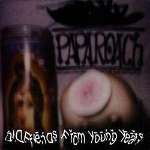
- Infest (2000) 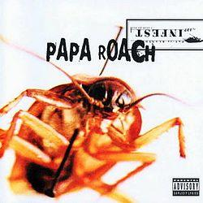
- Lovehatetragedy (2002) 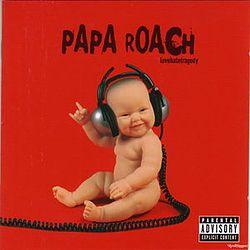
- Getting Away With Murder (2004) 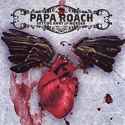
- The Paramour Sessions (2006) 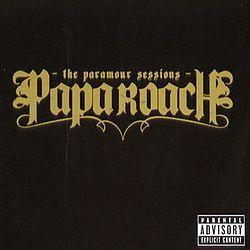
- Metamorphosis (2009) 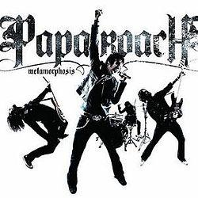
- Time For Annihilation (2010) 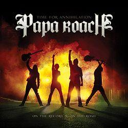
- The Connection (2012) 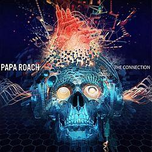
- F.E.A.R. (2015) 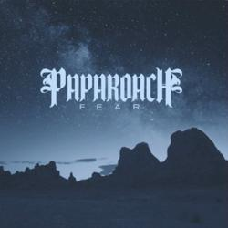
- Crooked Teeth (2017) 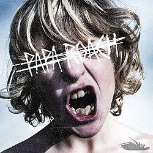
- Who Do You Trust? (2019) 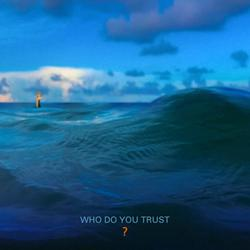